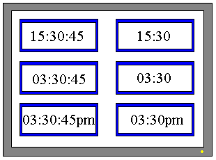

|
|
|
|
|
|
|
|
This section describes the different methods you can use to display dates:
Use the Time Display tool or Vijeo-Designer system variables to display the current system time for the target machine.
Use the Time Toolchest part to change a date.
With the Time Display tool, you can choose from a variety of display formats. The following example shows different formats used to display 30 minutes and 45 seconds past 3 o'clock p.m.

If you want to display additional text besides the time, like a colon (:), or create a customized time display, use system variables. Vijeo-Designer system variables are internal variables that store information such as time, date, screen ID, or error number. You can create your own time display by using _Hour, _Minutes, _Seconds, and _TimeZoneOffset system variables in Numeric Display or Value Animation.


When working with system variables, the Numeric Display part or Value-animated Text objects display the time in numeric format only.
The following table compares the display of time using Time Display parts and System Variables:
|
Date |
Using Date Display Parts |
Using Numeric Display Parts (System Variables) |
|
Display Format |
Choose from a selection of six formats, such as hh:mm or hh:mm:ss. |
Format the time by combining system variables with other text. Use _Hour, _Minutes, _Seconds, and _TimeZoneOffset (Data Type: Integer) system variables in Numeric Display part. Other text (like colon ":") can be added using the Text drawing tool. |
|
Animation |
You cannot add animation to a Time Display. |
You cannot add animation to a Numeric Display part. |
Changing the Time:
The steps required to change the time depend on what state the runtime is in.
|
Runtime Status |
Update Procedure |
|
Running |
Create scripts to change the time. |
|
Offline (Runtime Configuration Menu is displayed) |
You can change the time from the Runtime Configuration menu. After changing the time, the Time Display and system variables (_Hour, _Minutes, _Seconds, and _TimeZoneOffset) display the new time when you start up Runtime. |
With a Time Toolchest part, you can set the time using a keypad. For example, you can use a Time Toolchest part to change the time on the PLC. For Time Toolchest parts, you must always assign variables.

You cannot use system variables with the Time Toolchest part. The purpose of the Time Toolchest part is for applications that store the time in variables.
In the editor, you can choose from two time displays (Time_Display_01 and Time_Display_3D_01) and define its properties. In run time, pressing on the time display brings up a keypad so you can change the time.
For more information on how to set up a time display using Toolchest parts, see Section 11.5.3, Setting Up a Time Toolchest Part.